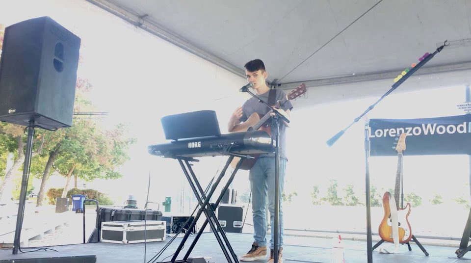
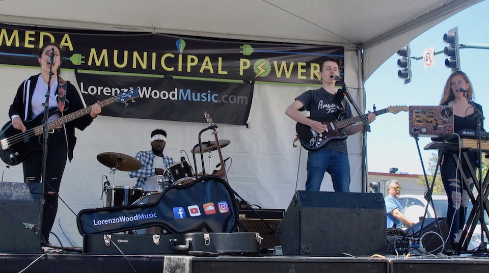

"Had the pleasure of booking Lorenzo Wood and his band at West End Night Market on Webster in Alameda... It was great to see these teenagers writing and performing originals! Solid set, professional and easy to work with. Fantastic Lorenzo is also into the sound/producing side; this young man will do nothing but keep improving and entertaining."
Private Events
I have played a number of private events — dinner parties, company parties, holiday parties, and weddings. I may be available for your event!
If you need me for a special event on a specific day that you’d like me to perform, please get in touch.
I can set up in a variety of musical configurations — singing with just an acoustic guitar and/or piano, looping by myself with multiple instruments, or with a full band.
The price will depend on the length of time and the amount of equipment and people I’m bringing.
Contact me to make arrangements!
Public Events
I am available — performing solo (guitars, keyboard, and looper) — or with advance arrangement, with a full band — at public events such as street festivals, performing a mix of well-known cover songs and my own songs.
I'm also interested in busking (street performing) at public events, for minimal or no charge to the event organizers, if I can set up in a high-traffic area and leave my guitar case open for tips. If AC power is available for amplification that's helpful, or I can bring my own power supply.
Contact me to make arrangements!
House Concerts
A house concert is just like it sounds — a concert in your house (or back yard, patio, community room, etc.). You invite friends, co-workers, neighbors to enjoy a one-hour or two-hour show. I have a minimum of 20 guests (10 for a mini-concert — see below) but of course the more, the better.
My concerts include original and cover songs. I will invite your guests to sing with me. Let me know of any special songs you would like me to prepare. The funnest part of a concert for me is singing and playing with others.
If you live in the San Francisco Bay Area and want to host a show, please send me an email to introduce yourself!
Cost & Tickets
There are several ways to help me be an independent artist:
- Regular House Party
- $200 deposit + $200 minimum guarantee at show. Either you can pay the flat amount, or you can ask your guests to bring a cash donation of $10 - $20 per person. It's your responsibility to collect from the guests. Some of my shows have paid me a flat amount but then guests end up putting tips in my guitar case, which of course makes me happy!
- Mini Concert
- If you aren't able to get together a big group, I'll do a mini concert — 10 songs for 10 (or more) people for 10 dollars each. ($100 deposit.) Since I don't make as much and I'm performing a shorter set, this is limited to areas close to my East Bay home. It will be acoustic without amplification, so best in a living room or similar space.
- Special Event
- See the "Private Events" section above for more details.
I also have some of my own CDs to sell at a "merch table" to help fund my music. I can bring my own table or we can use one of yours — ideally we'd set it up near the entrance so people will be tempted to take home a souvenier.
DEPOSIT INFO: The deposit locks in your date for the show. If you need to cancel the show, this deposit is fully refundable up until 4 weeks before the booked date. (Please provide as much notice as possible, so that I can re-arrange my schedule.)
Promoting the Show
Just promote the show the same way you'd promote a party at your house! Email. Facebook! Twitter! Evite.com or PaperlessPost.com! Call people on the phone! Send hand-written cards in the mail! Whatever you do, be sure to use multiple reminders and collect RSVPs to make sure people really do show up.
My shows are kid-friendly. Many kids ages 8-18 know the popular songs I cover, so this might be great for them. Kids tend to want to dance and sing along, which makes it extra-fun.
Equipment & Gear
I provide all of the equipment to ensure the music sounds great. If you can provide a real piano in the performance space, I can definitely use it to round out the songs I perform. (If not, no worries — my keyboard sounds great too!) There will be singing, acoustic/electric guitar, keyboards, and the looper for percussion, bass and harmonies. If your space is more intimate and you require a fully unplugged show, let's work something out.
Until I get my driver’s license, my parents provide my transportation. One or both will attend the show and help with equipment setup and staff the merchandise table.
Please make sure to set some aside food & drink for me and my crew. I perform best when I'm not hungry!
Setup
It's a good idea to make sure everybody has a seat for the show, whether you are providing folding chairs or asking people to bring their own. Having people in seats helps them pay attention to, and appreciate, the music.
If I'll be performing outdoors in the evening, lighting will be really important. Some kind of mood lighting (like you have stored in your basement/garage) will be helpful. It will also help to have some light on my merch table.
I'll need a power outlet to plug into, of course!